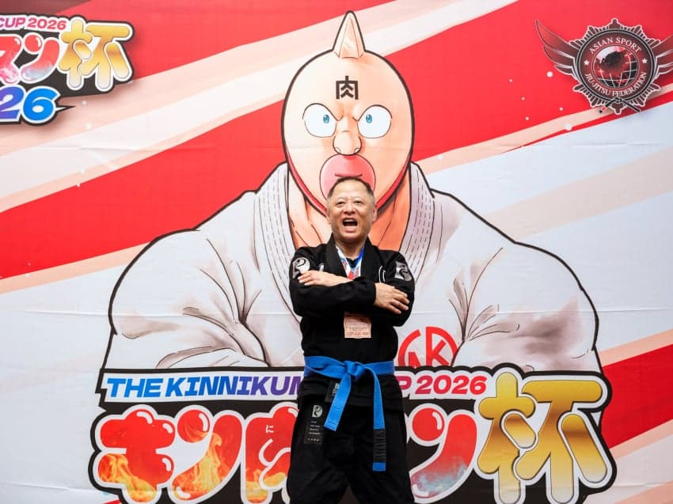
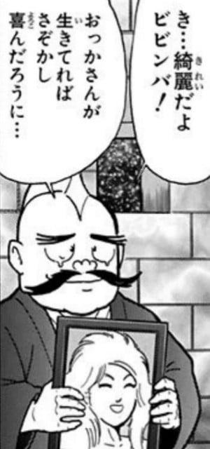
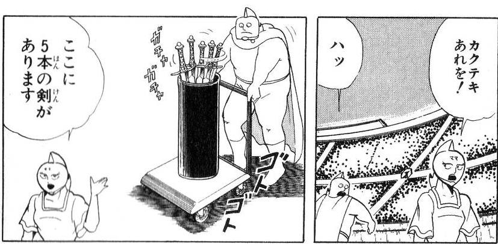
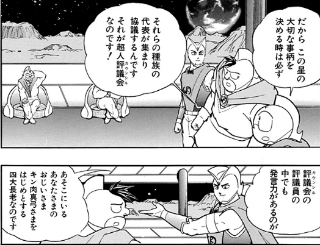
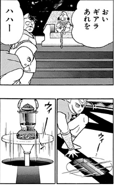
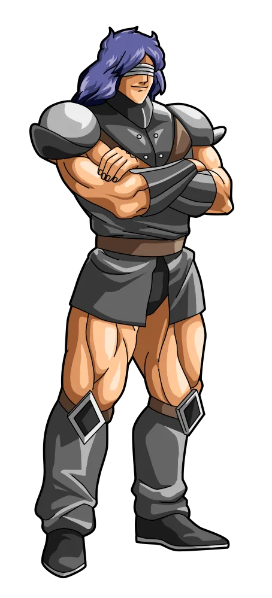
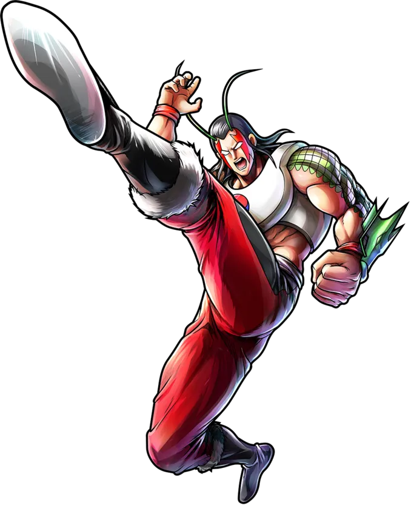
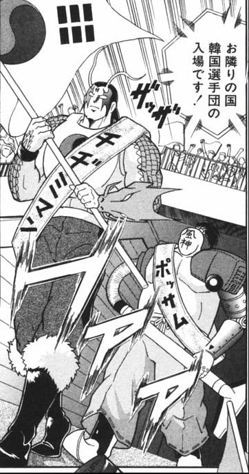
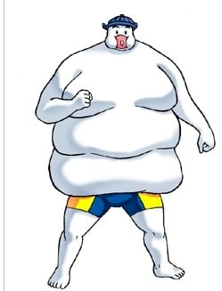

바로 근육맨의 작가인 시마다 선생님
연재 당시 재일조선인들이 주로 먹었던 내장구이에서 따온 이름인
호르몬 야키

영정사진속 여인은 호르몬 야키의 부인인 히라미(안창살)
안창살도 일본인보다는 한국인(재일교포 등)이 많이 먹었다고함.
호르몬 야키와 히라미의 딸이자 근육맨의 부인
이후 근육만두의 어머니가 되는
비빔밥
작중에 나오진 않지만 비빔밥의 오빠의 이름은 불고기

왕위쟁탈전에서 근육족의 신하로 나오는 깍두기(カクテキ 카쿠테키)
이름때문인지 얼굴도 네모낳다.


근육맨 2세에서 근육족 신하로 등장한 곱창(ギアラ기아라)

근육 만두의 동기생인 나물

근육맨 2세에서 한국대표로 등장한 지짐이맨

함께 출전한 보쌈(지짐이맨 뒤)

근육맨 2세 올초인대진격의 한국초인인 떡
떡은 원래 일본초인인 겨울떡맨이 될 예정이었는데 한국초인으로 변경되었다고한다.
유독 한국관련만 죄다 음식이름임
한식을 맛나게 드셨나보네